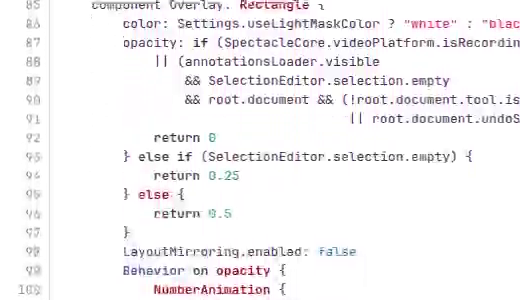
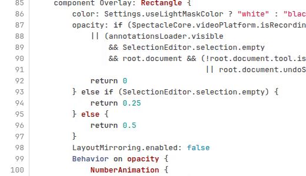
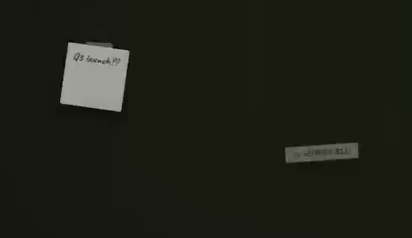
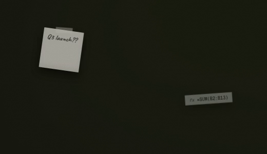

Recordings look bad because of one setting you can't reach
Spectacle hands recording to KDE's KPipeWire library, which encodes at quality level 35 on a scale where lower numbers are sharper. FFmpeg's own guide calls 17 to 28 the sensible range. Spectacle has no setting for it, so every recording gets 35. Your file from today was encoded exactly that way.
Below is one test clip encoded both ways on your processor: Spectacle's settings, and the High quality proposed as Ectolens's default.




| Setting | Size per minute | Encoding speed | Picture difference |
|---|---|---|---|
| Spectacle todayx264, quality 35, very fast, no B-frames | 4.8 MB | 3.4× real time | 2.47% |
| Small filex264, quality 23, very fast | 10.1 MB | 3.5× real time | 1.15% |
| Highx264, quality 16, very fast | 26.6 MB | 3.3× real time | 1.00% |
| Bestx264, quality 12, very fast, full color detail (4:4:4) | 27.9 MB | 2.4× real time | 0.38% |
| High at 120 frames per second | 42.0 MB | 1.8× real time | 1.03% |
| High at 240 frames per secondFalls just short of real time on the processor at full screen. | 49.5 MB | 0.96× real time | 1.03% |
How this was measured. The test clip puts ectonomic.com and KDE's code browser side by side on a 3440×1440 screen at 60 frames per second: still for 4 seconds, scrolling for 4, still for 2. Each setting was encoded with FFmpeg 8.1.3 at the lowest CPU priority while other work was running, so the speeds are floors. Picture difference is 1 minus SSIM, measured in full color against the original frames; lower is better.
Why Best exists. Even a lossless file in the standard color format differs by 0.63%, because that format stores color at half resolution. High comes within 0.37 points of that floor. Best keeps full color detail, which is why it beats every standard file at about the same size. The cost is compatibility: Firefox and some phones can't play it.
Record moves onto the toolbar you already use
Today the picture overlay and the recording overlay are two different places, and you pick one before you draw anything. Ectolens keeps one overlay. You frame first, then decide what to make of it. These are the toolbars at their real size.
One overlay, both outcomes
A window has been framed by clicking it. Everything except Record and the window mark in the size label is Spectacle as it is today.
Annotation tools. Unchanged. Marks you draw before pressing Record stay on screen and are recorded too.
Size. The size of the file you will get. The window mark means the frame is a window, so a recording follows that window if it moves.
The frame. Drag for any area, or click a window to take it whole. Over the desktop, a click takes that whole screen. The handles adjust it either way.
Picture actions. Accept, Cancel, Save, Save As, Copy, Extract Text and Export work exactly as they do today.
The toolbar. Under the frame, where it is today, so nothing moves for pictures.
Record. Records the same frame. The arrow beside it holds what goes into a recording: sound, the pointer, quality, frame rate and format. The R key does the same.
From Print Screen to a saved video
Press Print Screen and point
The screen freezes under a light veil, as it does today. Point at a window and it lights up, with its size beside it; click to take it whole. Drag anywhere for your own area instead.
Choose what goes in, if you want to
The arrow beside Record opens the recording choices. They stay as you leave them, so most days you skip this and press Record.
Record
The frozen picture fades into the live screen and recording starts. The veil lifts so you can work. A dashed line marks the frame, and Record becomes Stop in the same spot, with the time, Pause and the microphone switch beside it. Press Stop, or Print Screen again, to finish.
Done
The video saves to Videos/Screencasts, and the notification Spectacle shows today appears; clicking it opens the video. Nothing new to learn after recording.
Every encoder setting, explained where you change it
Settings › Recording replaces today's Video Saving page. It opens with what your recordings are right now, in numbers measured on this computer. The three quality choices are starting points: change anything under Encoder and Quality becomes Custom. An encoder is listed only if it actually opens on this computer.
When a recording doesn't go to plan
The computer can't keep up
If frames start dropping, the time turns orange and counts them, so a bad recording is never a surprise. Check Again in settings warns you ahead of time: on this computer, 240 frames per second at full screen falls just short on the processor.
Pausing
Pause stops the clock, and the paused stretch is left out of the file, the way OBS does it. The same button resumes.
Recording a whole screen
The controls would end up in the video, so they move to your other screen. With only one screen they hide, and Stop is in the system tray and on Print Screen.
A crash in the middle
The file is written in pieces while it records, then tidied into a normal MP4 when you stop. If anything crashes, what was recorded still plays. This is how OBS's Hybrid MP4 works.
The window moves or closes
A window recording follows the window around the screen. If the window closes, recording stops and keeps what it captured. A drawn area stays where you drew it.
Pressing Record twice by accident
Stop ignores clicks for the first half second, so a double click can't end the recording the moment it starts.
Marks drawn before Record
They stay on screen and appear in the video, because the video shows what you see. Undo removes them first if you don't want them.
GIF and WebP
These formats can't hold sound, so the sound choices say so, using Spectacle's own line: “The selected video format does not support audio.”
What gets built, in order
- Fork from KDE's current master, not the 6.7.5 release. Spectacle's master already records system audio and the microphone; 6.7.5 doesn't. KPipeWire is built as Ectolens's own private copy, so Plasma's copy, which draws window thumbnails and runs screen sharing, is never touched.
- The recording engine. Quality choices and every encoder setting, frame rates up to the screen's own, crash-safe files, Pause, separate sound tracks, the dropped-frame count and correct color tags. Encoders are found by trying to open each one, so NVENC appears on NVIDIA computers and nowhere else.
- The overlay. Record on the toolbar, the fade from frozen to live, the recording toolbar, and picking a window or screen by pointing.
- Settings › Recording, with the measured status line and Check Again.
Checks that run without me
- An encoder test runs every encoder this computer has on a made-up recording, then again with the graphics card hidden, to prove the processor path never needs NVIDIA.
- A crash test kills Ectolens mid-recording and checks that the file still plays.
- A stranger check runs Ectolens from outside the source folder with a fresh config and none of your files.
- Each check is shown to fail once with a planted fault before its pass counts.
Unproven, and put off
- Unproven: picking a window by pointing needs KWin to tell Ectolens where each window is. It is the riskiest part, so it gets proved before the overlay work starts.
- Unproven: marks drawn before Record showing up in the video depends on KWin including the overlay in the recording.
- Put off: HDR and 10-bit recording, trimming after a recording, an instant replay that saves the last 30 seconds, and a webcam bubble.
- Put off: NVENC AV1, which didn't open on this computer when tested.
- Snagit All-in-One capture: frame first, then choose a picture or a video from the toolbar. TechSmith
- GNOME Shell's capture overlay: when you switch to video, the frozen picture fades out in 200 ms and your selection stays. screenshot.js
- macOS Screenshot toolbar: picture and video on one toolbar, with microphone and pointer choices in one menu. Apple
- Windows Snipping Tool: Pause on the recording toolbar. Microsoft
- OBS Studio 32.2: quality 23 and 16 at very fast for its two quality choices, Hybrid MP4 for crash-safe files, and pause that leaves the gap out. SimpleOutput.cpp, Hybrid MP4
- FFmpeg's H.264 guide: 17 to 28 is the sensible quality range. FFmpeg wiki
- KDE's own open requests: a quality setting (Spectacle !538, !585), a frame-rate setting (!358) and NVENC through VA-API (KPipeWire !257). invent.kde.org